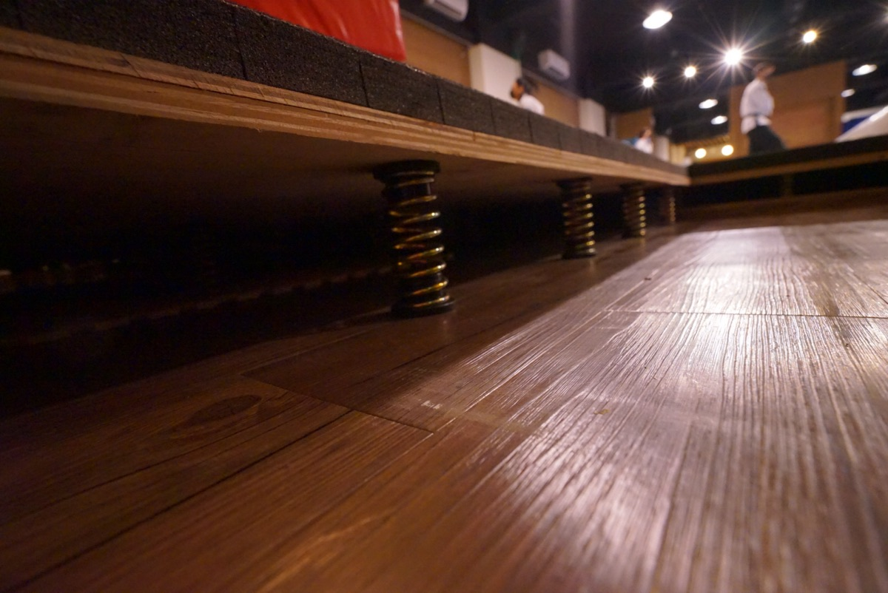
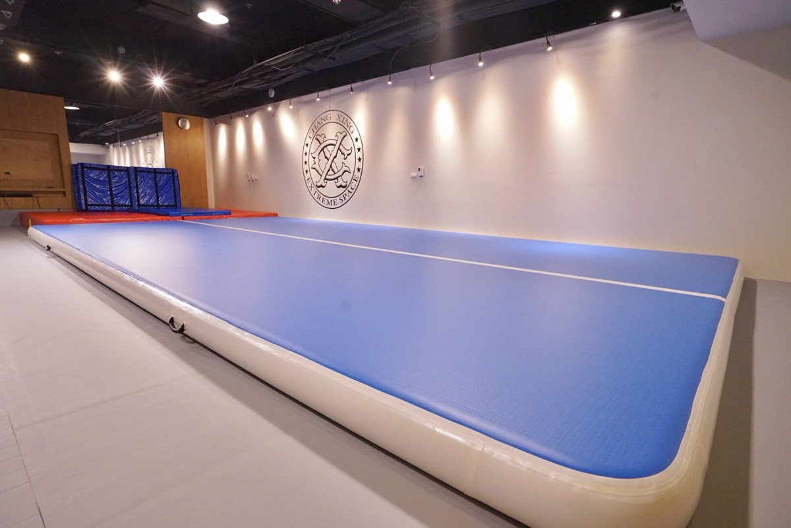
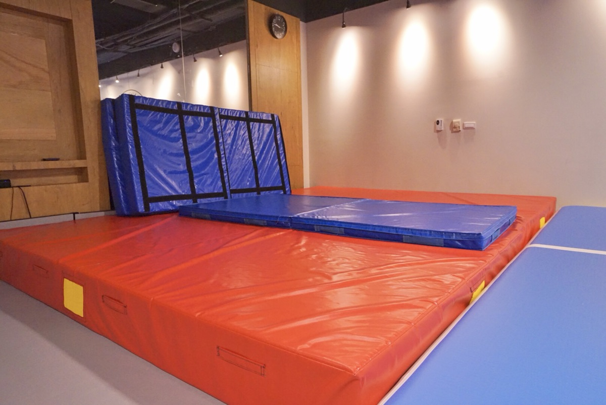
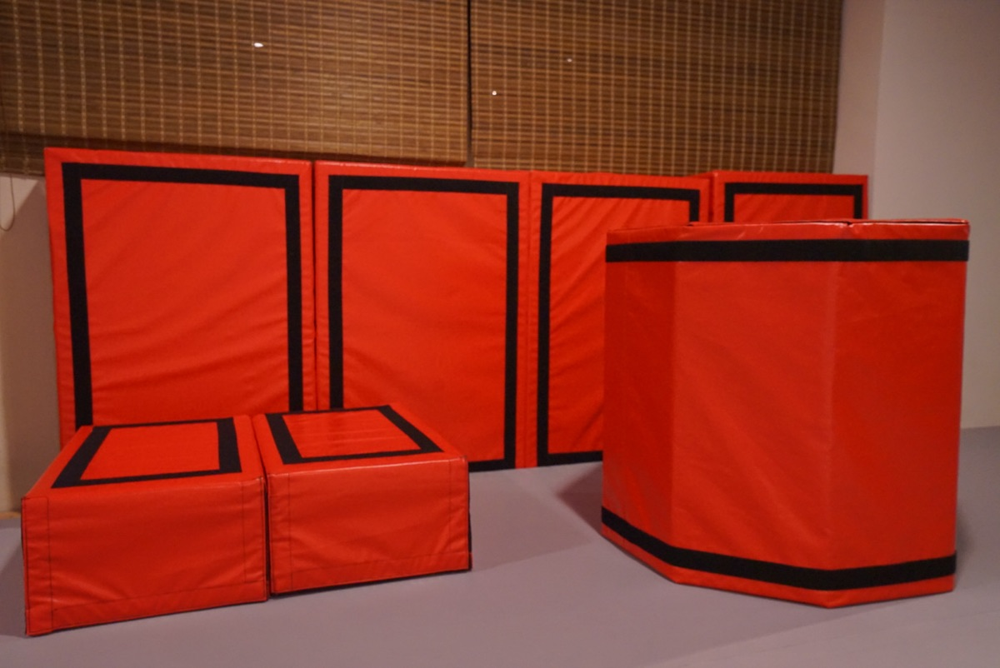

PROTECTION SOP
教練的手跟著你
每個動作都有對應的保護手法 — 教練站在哪、手扶哪裡、什麼時候幫你借力，都是練過的。從起跳、翻轉到落地，教練的手全程跟著你的身體軌跡，第一次嘗試就有人接住。
每一個漂亮的空翻背後，都是同樣兩件事 — 專業的場地，與教練的安全保護。這兩件事我們做到位，你的每一次嘗試，都有人接住。
每一個保障，都是為了讓你敢挑戰更難的動作。
每個動作都有對應的保護手法 — 教練站在哪、手扶哪裡、什麼時候幫你借力，都是練過的。從起跳、翻轉到落地，教練的手全程跟著你的身體軌跡，第一次嘗試就有人接住。
頂級氣墊＋厚軟墊雙層保護，每個新動作一律先在氣墊上練。落地不痛，是大部分學員「敢嘗試第一次」的關鍵 — 器材怎麼用，往下看器材介紹。
空翻不是一次學會的 — 它被拆成翻滾、倒立、起跳、擺臂，一步步練上來。每一階段都有明確標準，通過了才進下一步，你不會在還沒準備好時被要求硬上。
小班制，教練照顧得到每一個人。誰的姿勢歪了、誰今天狀態不對，當堂就被看見、當堂調整 — 保護不只在墊子上，也在教練的眼睛裡。
兩館同步配置。好的器材讓每一次嘗試的成本變低 — 敢試，才學得快。

整片訓練區地板下是彈簧＋木板結構，與競技體操比賽場地同原理。暖身、踢技、空翻串連都在這上面練 — 起跳借得到彈力、落地衝擊被地板吸收，關節負擔更小、能練的次數更多。

整面充氣氣墊，軟硬適中、回彈穩定，是每個新動作的第一站：第一次後空翻、第一次轉體，都先在氣墊上反覆試 — 摔了不痛、失敗零成本。動作穩定了，再帶到彈性地板上完成。

高密度大軟墊，鋪在跳床與高處動作的落點，怎麼落都有足夠緩衝。也會疊成不同高度當輔助平台 — 從高往低練，難度直接降一級，更快累積成功經驗。

八角形的滾筒軟墊，是空翻的「預習器」：背靠著它向後躺、順著弧線翻過去，離地之前身體就先記住後翻的軌跡和節奏。也用來練下腰、後手翻的分解動作，教練全程在旁控制速度。
都在台北大同區，捷運步行可達。
承德路三段，捷運圓山站步行可達。完整的氣墊、軟墊、跳床與翻滾訓練區，幼兒體操到成人空翻都在這裡。
重慶北路二段，捷運大橋頭站 2 號出口。同樣配置專業安全設備，分流上課時段，給你更充裕的練習空間。
2 歲半–6 歲幼兒體操在軟墊與遊戲化器材中進行，在玩中發展體能與協調，家長可以放心。
安全到位，孩子和大人才敢挑戰。練的是膽量、是自信、是「我做到了」的瞬間 — 技術只是副產品。